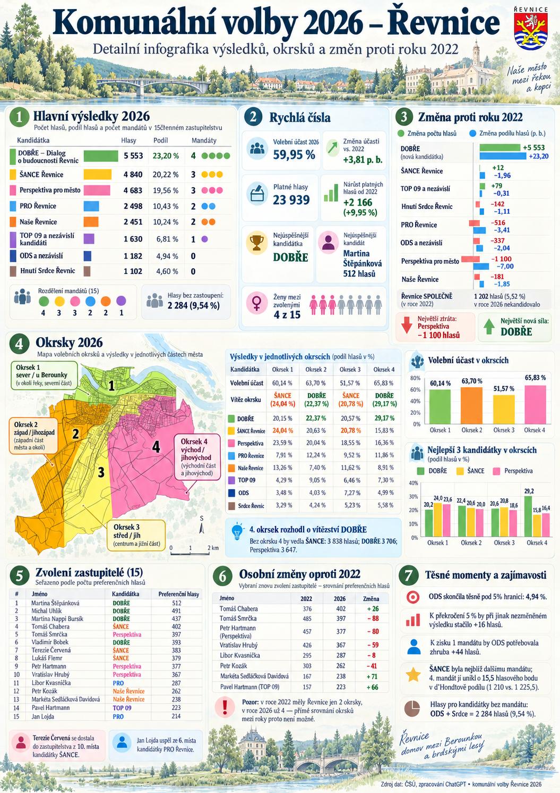

Kapitola 3 · analýza GPT
Druhý pohled na stejná data
Model GPT (Astra) dostal úplně stejná data a stejné zadání jako Claude, ale analýzu navrhuje a počítá sám a nezávisle. Díky tomu uvidíme, které závěry obstojí bez ohledu na to, kdo je počítal.
připravujeme
Analýza se právě počítá
Jakmile bude hotová, najdete tady její výsledky ve stejné podobě jako u analýzy Claude a celý notebook v sekci Pro fajnšmekry.
Co tu bude
- Stejná vstupní data (480 okrskových čísel, 120 kandidátů)
- Stejné zadání jako pro Claude
- Vlastní model a odhad osobních křížků pro každého kandidáta
- Jupyter notebook k prohlížení v prohlížeči
- Srovnání s analýzou Claude v souhrnu

Mezitím od GPT
GPT už připravil infografiku se všemi základními výsledky. Její interaktivní verzi najdete na stránce Výsledky v kostce.